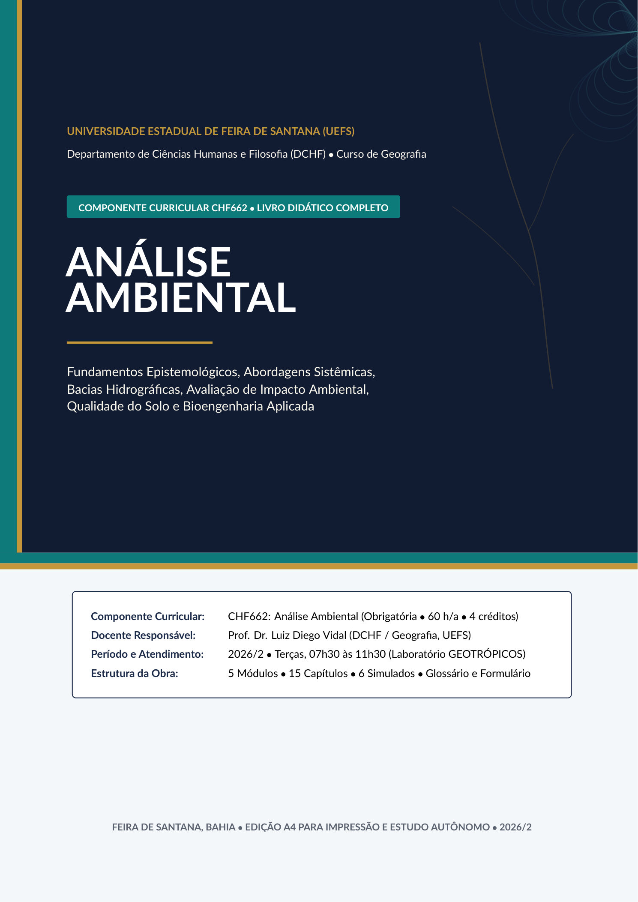

Análise Ambiental (CHF662)
Apostila de estudo, DCHF / Geografia (UEFS)
Apostila completa do componente curricular CHF662 (Análise Ambiental), Curso de Geografia da UEFS, organizada em cinco módulos, 15 capítulos em 10 etapas, simulados comentados, formulário e glossário.
![]()
Apresentação e orientação de estudo

 Baixar a apostila em PDF (Versão A4 Diagramada)
Baixar a apostila em PDF (Versão A4 Diagramada)
A análise ambiental como leitura integrada do território
A análise ambiental investiga como processos físicos, organismos, usos da terra e relações sociais participam da transformação do território. Seu trabalho envolve reconhecer problemas, formular explicações, selecionar dados e justificar decisões. A observação de um processo erosivo exige relacionar chuva, materiais do terreno, circulação da água e formas de ocupação, acompanhando suas consequências sobre ecossistemas e populações.
Esta apostila acompanha o componente CHF662, Análise Ambiental, do Curso de Geografia da Universidade Estadual de Feira de Santana, vinculado ao Departamento de Ciências Humanas e Filosofia. O percurso reúne fundamentos epistemológicos, conceitos operacionais e métodos aplicados a bacias hidrográficas, vertentes, solos e áreas degradadas. O Semiárido baiano e os usos múltiplos do Rio São Francisco aproximam esse percurso das situações examinadas em campo.
O objetivo é capacitar o estudante a compreender e aplicar os fundamentos teórico-metodológicos da análise ambiental, integrando componentes físico-bióticos e socioespaciais ao diagnóstico, à interpretação e à proposição de medidas de planejamento, conservação e recuperação. A formação envolve explicar os mecanismos observados, conferir números e unidades, reconhecer limites dos métodos e comunicar os resultados com clareza.
Organização do conteúdo
Os cinco módulos compreendem 15 capítulos de conteúdo. Os simulados são atividades de revisão e mantêm numeração independente dos capítulos. Ao final, uma avaliação integrada, o formulário técnico, o glossário e as referências apoiam a consulta e a preparação dos produtos da disciplina.
| Módulo | Capítulos | Relação entre os conteúdos |
|---|---|---|
| Fundamentos epistemológicos e conceituais | 1 a 4 | Questão ambiental, relação sociedade-natureza, abordagens geográficas e conceitos que sustentam o diagnóstico. |
| Avaliação de impacto e análise integrada | 5 e 6 | Construção de cenários, comparação de alternativas e relações entre componentes e escalas ambientais. |
| Bacias, vertentes e fragilidade | 7 a 9 | Circulação da água, organização do relevo e dos solos e interpretação da transformação da paisagem. |
| Indicadores, solos e erosão | 10 a 12 | Desenho do monitoramento, avaliação de funções do solo e quantificação da degradação. |
| Bioengenharia, legislação e diagnóstico | 13 a 15 | Seleção de intervenções, enquadramento e elaboração de um diagnóstico ambiental aplicado. |
A ementa articula a questão ambiental contemporânea às abordagens sistêmicas e integradoras, ao planejamento territorial e à bacia hidrográfica como unidade de análise. Inclui avaliação de impacto ambiental, indicadores de qualidade do solo, morfopedologia, fragilidade, vulnerabilidade, risco, bioengenharia de água e solo, legislação e recuperação de áreas degradadas.
Como desenvolver o estudo
Cada capítulo apresenta dez momentos de aprendizagem. Os objetivos e a retomada dos conhecimentos necessários situam o tema, enquanto a fundamentação teórica desenvolve conceitos, mecanismos e condições de aplicação. Os exemplos resolvidos explicitam dados, unidades, cálculos e interpretação, permitindo acompanhar como uma pergunta é transformada em uma resposta técnica.
A discussão dos erros frequentes ajuda a conferir o raciocínio antes da resolução dos exercícios. As atividades de fixação e as questões autorais no estilo de exames permitem aplicar o conteúdo em situações novas. O gabarito comentado deve ser consultado após a tentativa de resolução, confrontando o método utilizado, o resultado e sua interpretação. A síntese e a verificação final orientam a revisão das dificuldades identificadas.
Nos exemplos numéricos, os valores fornecidos para treinamento representam dados didáticos. Resultados de pesquisas são identificados por sua fonte e por suas condições de obtenção. A transferência de um resultado para outra área depende da compatibilidade entre materiais, escala, clima, método e objetivo de análise.
A rotina sugerida combina leitura prévia, participação nas discussões e retomada dos exemplos após a aula. O registro das dúvidas deve indicar onde o raciocínio ficou incompleto, como na escolha de uma variável, na conversão de unidade ou na interpretação de uma hipótese. Esse registro ajuda a dirigir a revisão.
Avaliação da disciplina
O plano organiza a avaliação por estudos orientados, prova teórica e trabalho prático. Os simulados apoiam o estudo e a autoavaliação. As orientações institucionais e as instruções fornecidas em aula definem as condições das atividades avaliativas.
| Instrumento | Produto e abrangência | Pontos máximos | Participação |
|---|---|---|---|
| Estudos orientados EO1 a EO4 | Quatro atividades individuais associadas aos textos-base e aos capítulos 2 a 5. Cada atividade vale 0,5 ponto. | 2,0 | 20% |
| Avaliação teórica individual | Prova predominantemente dissertativa, abrangendo os capítulos 1 a 9. | 3,0 | 30% |
| Trabalho prático final | Diagnóstico aplicado, com caracterização, interpretação, indicadores e proposta de intervenção. | 5,0 | 50% |
| Total | Soma dos pontos obtidos nos instrumentos. | 10,0 | 100% |
A nota final resulta da soma das pontuações efetivamente obtidas. Os limites de 0,5 ponto por estudo orientado, 3,0 pontos para a prova e 5,0 pontos para o trabalho evitam a aplicação duplicada de pesos sobre valores já expressos em pontos.
Trabalho prático final
O trabalho final pode examinar uma microbacia, uma encosta, uma margem ou outra unidade justificada pela pergunta de análise. Sua elaboração deve avançar com o estudo, mantendo os dados organizados por fonte, data, unidade e método. As conclusões devem distinguir observação, hipótese e previsão, relacionando cada proposta ao processo que se pretende modificar.
Fontes, figuras e condições de uso
As imagens utilizam referências da disciplina, o acervo disponibilizado pelo docente e figuras de estudos identificados nas legendas. Imagens externas mantêm créditos e licenças específicas. As versões submetidas de estudos são identificadas como manuscritos.
O texto é disponibilizado sob licença Creative Commons Atribuição-NãoComercial-CompartilhaIgual 4.0. As licenças próprias das imagens estão indicadas junto às reproduções e no registro de fontes ao final do livro.